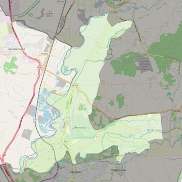

San Rafael Arnaiz y San Isidro
- Arciprestazgo
- Aranjuez
- Población
- Aranjuez
- Dirección postal
- Pza. Mayor 3º (Real Cortijo de San Isidro)
- Código postal
- 28300
- Extensión
- 38,26 km² (3.826 ha)
- Teléfono
- 679 802 738


Descargar mapaLímites según decreto
"Partiendo de la glorieta “Santiago Rusiñol”, arrancan por el eje del puente Barcas (en dirección norte); siguen por el río Tajo (en dirección noroeste), por el límite de las provincias Madrid-Toledo (en dirección noreste), por el límite de los términos municipales de Aranjuez-Ciempozuelos (en dirección noreste), por el límite de los términos municipales de Aranjuez-Titulcia (en dirección este), por el límite de los términos municipales de Aranjuez-Chinchón (en dirección suroeste), por el límite de los términos municipales de Aranjuez-Colmenar de Oreja (en dirección suroeste), por el límite de las provincias Madrid-Toledo (en dirección sur), por el río Tajo (en dirección oeste) y por el eje del puente Barcas hasta la glorieta Santiago Rusiñol, punto de partida. (Decreto de erección del 21-6-2005; B.O. de Julio-Agosto, 2005, pág. 775)